What looked off next to the pixel art, what this PR fixes, and the choices left for you. Every phone image is a
real simulator screenshot unless it says mockup.
Changes in the PR
Left is main, right is this branch.
Type with a voice
Body text and lyrics use M PLUS Rounded 1c. It covers Japanese, so kana, kanji and English share one soft,
round voice instead of SF Pro plus Hiragino.
Titles, tabs, numbers and short buttons use Pixelify Sans, a readable pixel face that matches the logo and
the art.
Lyrics and song titles stay in the rounded face: a pixel face has no Japanese and gets hard to read at
furigana size.
Italics are gone. The rounded face has none, and a faked slant looked cheap.
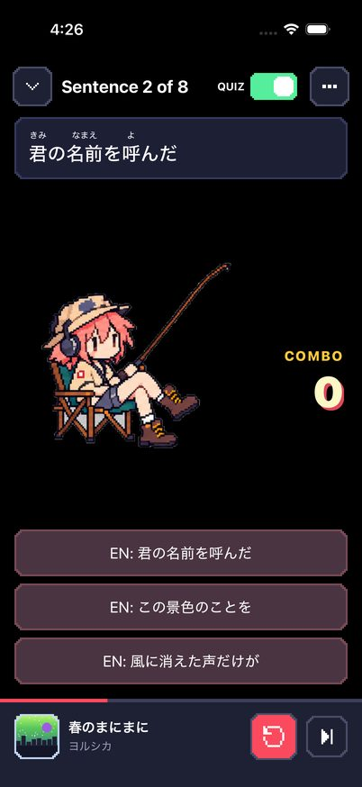
Main
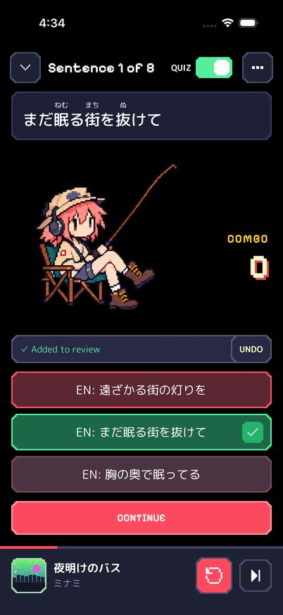
This branch
Settings, rebuilt
Every setting is a row: name on the left, value or control on the right, like the song menu. No more
stacks of full-width gray buttons.
Answer time is a segmented control with a one-line explanation, instead of a button that cycles through
hidden values.
The lyrics scan result is three big pixel numbers instead of a run-on sentence.
Sync, rescan and album art rows show when they last ran. Errors sit under the section they belong to.
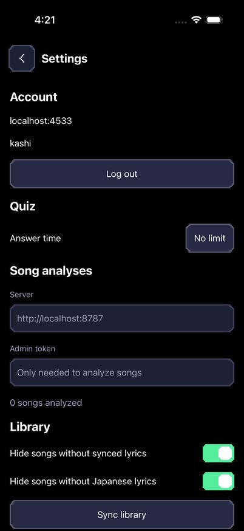
MainThis branch
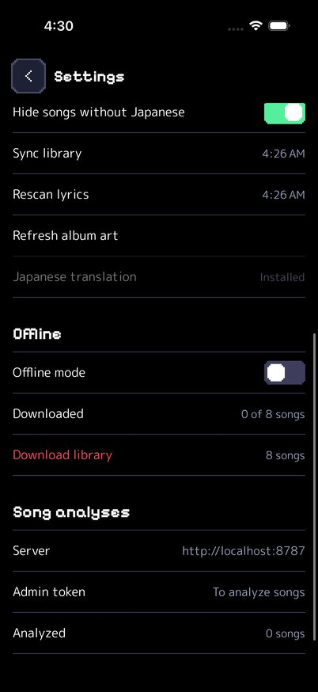
Scrolled
Login looks like the app
The harbor and the mascot greet you, with the real logo instead of plain bold text.
The form scrolls above the keyboard, so the field you are typing in stays visible.
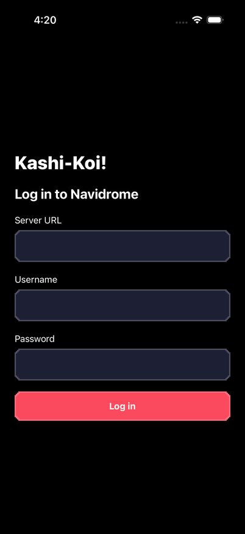
Main
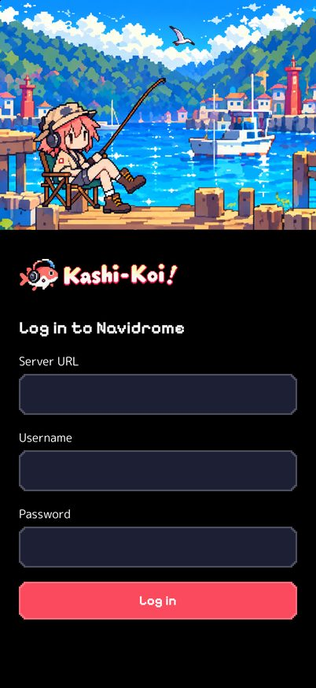
This branch
Small pixel fixes
The three round shapes became stepped pixel squares: Home's review arrow, the Review tab badge and the
right-answer check.
The iOS spinner became three pixel blocks that light up in turn.
Home hides "Recently played" until something has been played, instead of a header over nothing.
The combo label, Continue, Explain and Undo use the pixel face at a readable size.
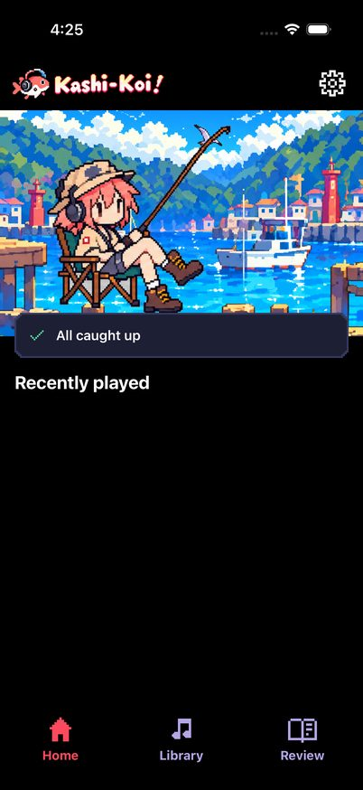
Main, nothing played yet
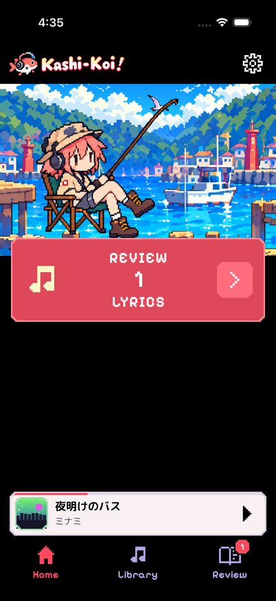
This branch
Pick a font
The same three screens with each font pair, captured in the app. The PR ships A. Swapping is a two-line change
in
src/constants/theme.ts
plus the font files.
A. Pixelify Sans + M PLUS Rounded 1c
Pixel titles, rounded body and lyrics. The pixel face only shows up where it reads well: short, large,
Latin.
Review 12 lyrics
遠ざかる街の灯りを
Counting the fading town lights
In the PR
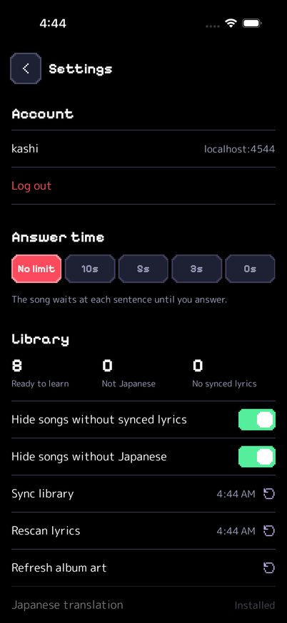
B. DotGothic16 everywhere
A Japanese pixel font, so even the lyrics are pixels. The most retro by far. One thin weight only, so titles
lose emphasis, and small kanji get blotchy.
Review 12 lyrics
遠ざかる街の灯りを
Counting the fading town lights
Runner-up
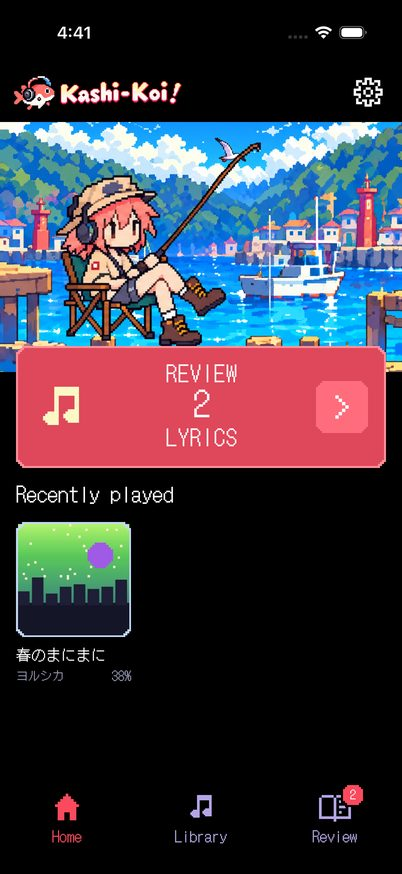
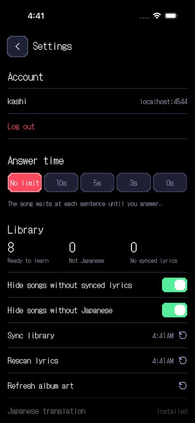
C. Silkscreen + Nunito
Arcade caps for titles, Latin-only rounded body. Silkscreen is uppercase-only and wide, so "No limit" wraps
and the quiz header truncates. Japanese falls back to Hiragino.
Too loud
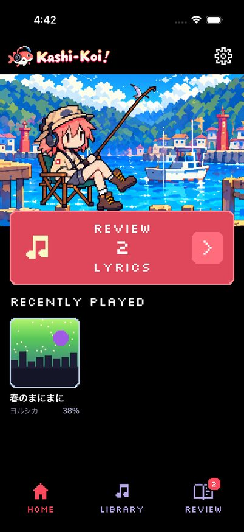
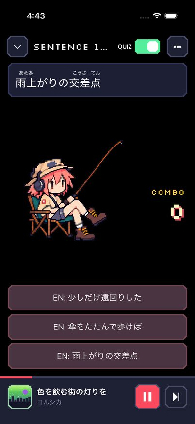
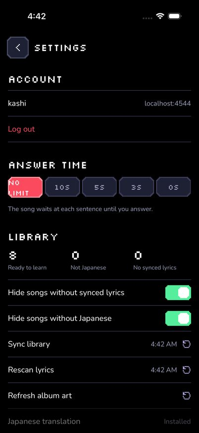
D. M PLUS Rounded 1c only
Friendly and very readable, closest to the banner's interface text. No pixel type at all, so the screens
lean on the art for character.
Safe
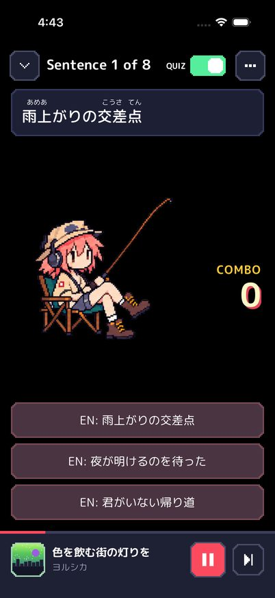
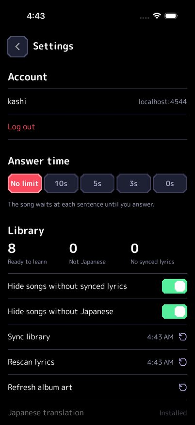
E. Pixelify Sans + system
Pixel titles over the old SF Pro body. Smallest change and no 10 MB Japanese font, but the body still reads
serious next to the art.
Halfway
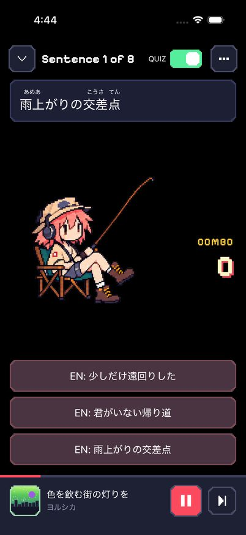
Main today: system font
SF Pro and Hiragino, for reference.
Mascot
The headbang sheet was drawn out of order, so she snapped forward, back, back, forward with jumps of up to 72
pixels. The strip now plays the frames back to front and back, one smooth sweep per beat. Frames also step on
the UI thread, so quiz scoring can no longer make her stutter. Both strips stay loaded, so the first combo of
three doesn't flash.
Main frame orderNew frame order
The light fringe came from the gray backdrop blending into her dark outline, plus gray left inside the chair
frame. The sprite script now clears enclosed backdrop and peels the blended edge pixels.
Main: gray halo, gray chair gapsThis branch
Settings layouts
The PR ships plain rows to stay dense and chrome-free. The alternative wraps each group in a framed panel with a
title bar, closer to a game's options menu and the banner's panels.
Rows, in the PR
‹Settings
Account
kashilocalhost:4544
Log out
Answer time
No limit10s5s3s0s
Library
182Ready to learn
21Not Japanese
48No synced lyrics
Hide songs without synced lyrics
Hide songs without Japanese
Sync library4:26 AM ↻
Rescan lyrics4:26 AM ↻
Offline
Offline mode
Downloaded12 of 182 songs
Framed panels, mockup
Still rough
Judgment calls I left alone. Each would change how the app feels, so they are yours.
The quiz has a big black void.
The mascot floats between the sentence and the answers with nothing behind her. The redesign page puts her on
the dock.
Slate panels against pure black.
The navy cards come from the banner, where they sit on a sunny harbor. On true black they feel like a
different game. A wood-and-cream panel style would tie back to the art.
The mini player is the only light surface.
It matches the banner, but on black it pulls the eye more than the review card does.
Hairlines are 1 point.
Pixel frames are 2 points, so list dividers look thinner than everything else.
Bundle size.
M PLUS Rounded is about 10 MB for three weights because it carries kanji. Option E avoids that if size
matters.